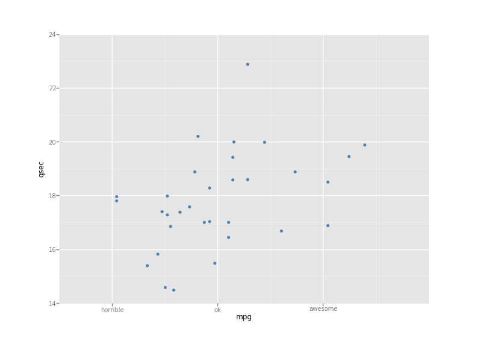
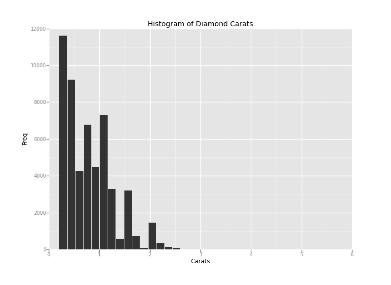
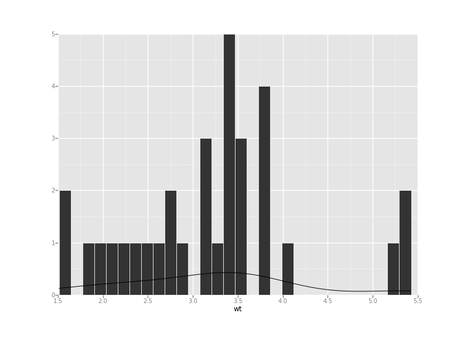
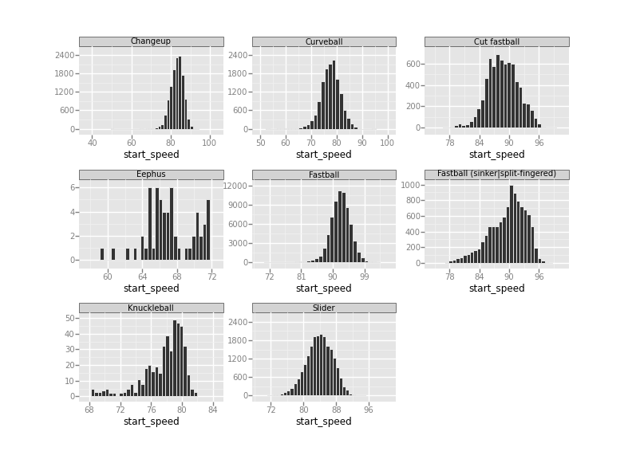

ggplot
R dilinde cokca kullanilan ggplot2 kutuphanesi nihayet Python'a tasinmaya baslandi. Kurmak icin,
sudo pip install ggplot
Matplotlib ile cok zor yapilan isler ggplot2 ile rahat yapilabiliyor. Kutuphanenin cok ciddi takipcileri / hayranlari var, ozellikle daha once R ile kodlama yapmis olan istatistikciler ve bilimciler. Bu kisilerin cok sevdigi bir ozellik bir grafigin kesit kesit (layer by layer) ust uste konarak tasarlanabilmesi. Bu yaklasima gore grafik noktalari bir kesit, yazilari bir baska kesit, eksen boyutlari bir baska kesit olabilir mesela, ve bu ekler hep benzer cagrilarla yapilir (burada + isareti kullanilmis olmasi raslanti degil). Kutuphane, Leland Wilkinson'un Grafigin Grameri adli yaklasiminin kodlanmis halidir; yani grafiklemenin dili boyle olmalidir seklinde bir yaklasimdir bu -- oldukca iddialidir.
Ornek,
from ggplot import *
print mtcars[:3]
name
mpg
cyl
disp
hp
drat
wt
qsec
vs
am
gear
carb0
Mazda RX4
21.0
6
160
110
3.90
2.620
16.46
0
1
4
41
Mazda RX4 Wag
21.0
6
160
110
3.90
2.875
17.02
0
1
4
42
Datsun 710
22.8
4
108
93
3.85
2.320
18.61
1
1
4
1[3 rows x 12 columns]
Ilk grafik
from ggplot import *
p = ggplot(mtcars, aes('mpg', 'qsec'))
p = p + geom_point(colour='steelblue') + \
scale_x_continuous(breaks=[10,20,30], \
labels=["horrible", "ok", "awesome"])
plt = p.draw()
plt.show()
Goruldugu gibi her sey kesit kesit ekleniyor. Histogram
p = ggplot(aes(x='carat'), data=diamonds)
gg = p + geom_histogram() + gg
title("Histogram of Diamond Carats") + labs("Carats", "Freq")
plt = gg.draw()
plt.show()
Histogram ve onun uzerine eklenmis egri
p = ggplot(aes(x='wt'),mtcars) + geom_histogram() + geom_density()
Beyzbol verisi uzerinde
df = pd.read_csv("baseball-pitches-clean.csv")
df = df[['pitch_time', 'inning', 'pitcher_name', 'hitter_name', 'pitch_type', 'px', 'pz', 'pitch_name', 'start_speed', 'end_speed', 'type_confidence']]
print df.head()
pitch_time inning
pitcher_name
hitter_name
\0
2013-10-01 20:07:43 -0400
1
Francisco Liriano Shin-Soo Choo
1 2013-10-01 20:07:57 -0400
1 Francisco Liriano Shin-Soo Choo
2 2013-10-01 20:08:12 -0400
1 Francisco Liriano Shin-Soo Choo
3 2013-10-01 20:08:31 -0400
1 Francisco Liriano
Shin-Soo Choo
4
2013-10-01 20:09:09 -0400
1
Francisco Liriano
Ryan Ludwick
pitch_type
px
pz pitch_name start_speed end_speed type_confidence 0
B 0.628 1.547
Fastball
93.2
85.3
0.894 1
S
0.545
3.069
Fastball
93.4
85.6
0.895
2
S
0.120
1.826
Slider
89.1
82.8
0.931 3
S -0.229 1.667
Slider
90.0
83.3
0.926
4
B -1.917
0.438
Slider
87.7
81.6
0.915
[5 rows x 11 columns]
Grafikleme
p = ggplot(aes(x='start_speed'), data=df) + geom_histogram() + facet_wrap('pitch_name')
plt = p.draw()
plt.show()



